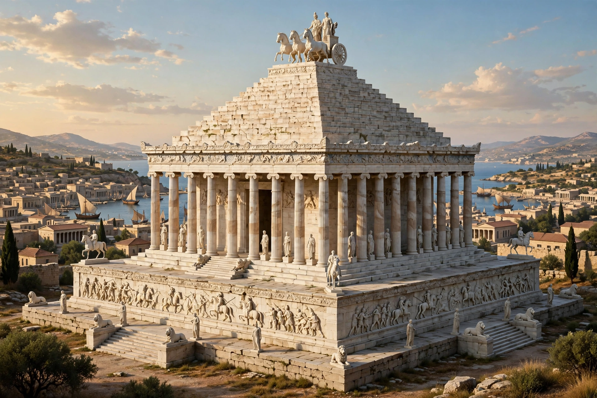

| Halicarnassus | |
|---|---|
 | |
| Modern site | Bodrum, Turkey |
| Region | Caria, Anatolia |
| Capital under | Hecatomnid dynasty, from c. 370 BCE |
| Famous for | Mausoleum — one of the Seven Wonders |
| Notable natives | Herodotus; Dionysius of Halicarnassus |
Halicarnassus (Ancient Greek: Ἁλικαρνασσός; modern Bodrum, Turkey) was an ancient Greek city in Caria on the southwest coast of Anatolia. Under the Hecatomnid satraps it became the capital of Caria, and it is remembered above all for the Mausoleum, the monumental tomb of Mausolus, counted among the Seven Wonders of the Ancient World.
Founded by Dorian Greeks, Halicarnassus was briefly expelled from the Dorian Hexapolis over a ritual offence, according to Herodotus — the city's most famous son, known as the "father of history". Ruled by tyrants under Persian suzerainty (most famously Artemisia I, who fought at Salamis), the city was refounded as a planned capital by the satrap Mausolus around 370 BCE, ringed with fine walls and harbours. Alexander the Great took it only after a hard siege in 334 BCE. It later passed through Hellenistic, Roman and Byzantine hands, declined, and was overshadowed by the Hospitaller castle of St Peter built at Bodrum from 1404 — partly from stones of the ruined Mausoleum.
The tomb of Mausolus (died 353 BCE), completed by his widow-sister Artemisia II and worked on by the leading sculptors of the age — Scopas, Bryaxis, Leochares and Timotheus — rose about 45 metres in a fusion of Greek, Lycian and Egyptian forms: a high podium, an Ionic colonnade, a stepped pyramid roof and a crowning four-horse chariot. It stood largely intact for some 1,600 years until Crusader-era quarrying and earthquakes ruined it. Excavations by Charles Newton in 1856–57 recovered its great statues, now in the British Museum, and the word mausoleum entered the languages of the world from it.